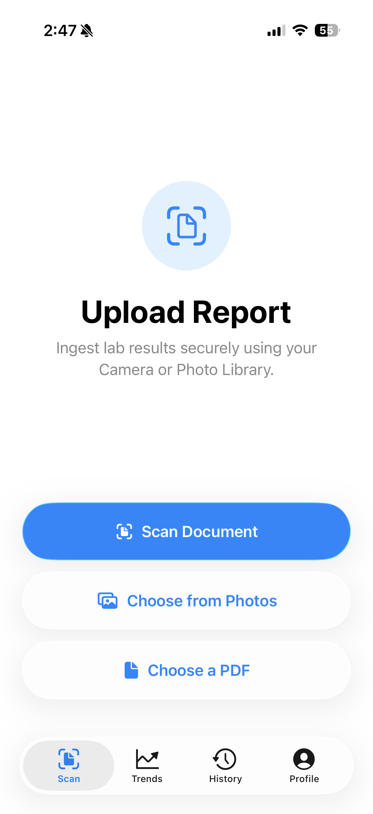
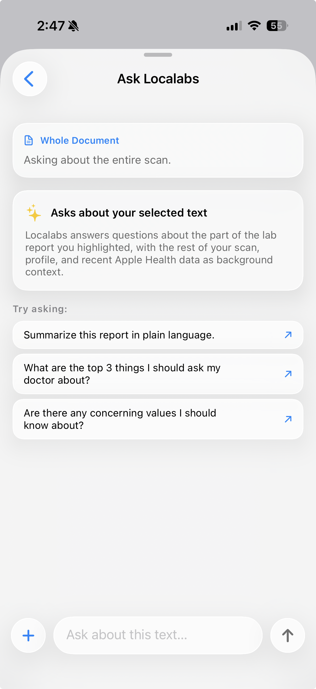
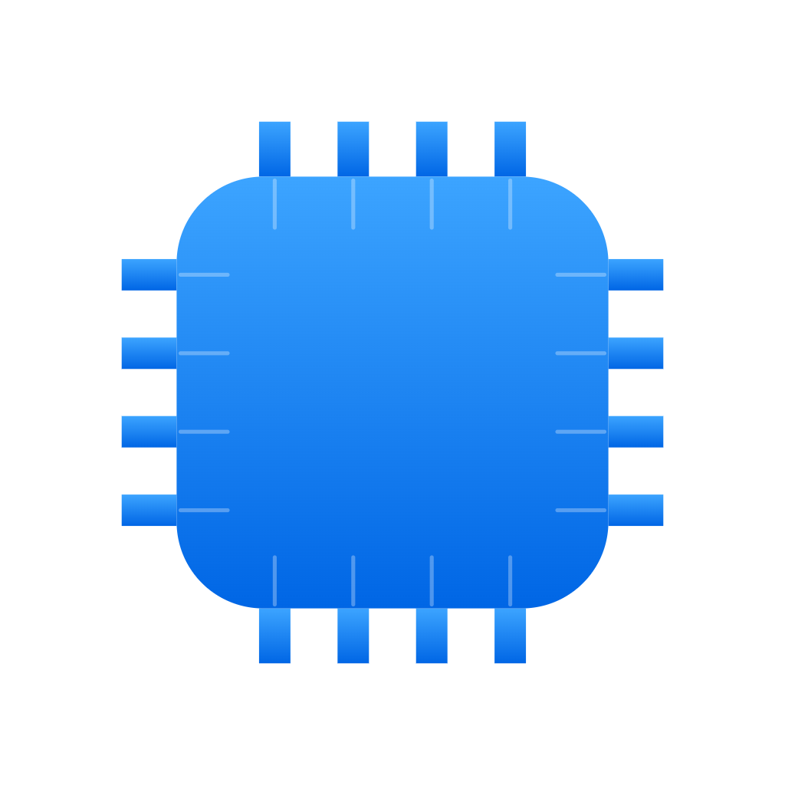
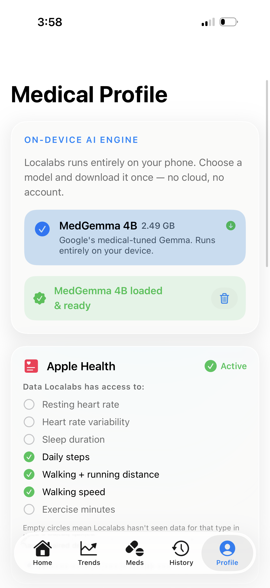
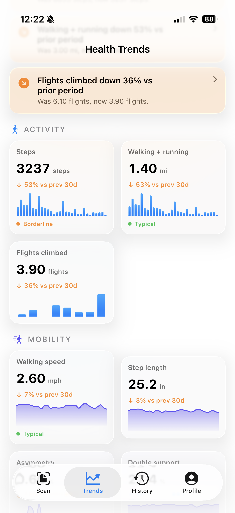

Your lab report, in plain English.
Snap a photo of your bloodwork. Localabs runs a medical AI entirely on your iPhone and explains every value — privately, in seconds.
Lab reports were written for doctors.
Localabs reads them for you — explains what each number means, what to ask at your next visit, and how it relates to the rest of your health. In language any human can read.
Scan. Read. Ask.
Three steps. All on-device. No upload, no waiting on a server.
Scan your report.
Apple's native document scanner handles multi-page. Vision OCR pulls every value.

Get a plain read-out.
The on-device AI rewrites your report into five readable sections in seconds.
Ask follow-ups.
Lasso any line on the scan. Chat in the context of your profile and Health data.

Designed around how you actually live with your results.
100% on-device AI
A 4-billion-parameter medical-tuned model — Google's MedGemma 4B — runs on your iPhone's Neural Engine and GPU. Your lab values never touch a server.

Apple Health context
Activity, sleep, vitals and mobility from the past 30 days fold into every translation — so a borderline cholesterol number is interpreted next to your steps and resting heart rate.
Local history, longitudinal AI
Past scans live on-device with AI-generated titles. The next translation reads them too — so trends and recurring values get flagged automatically.
Memory that grows with you
Mention a medication or family history in any chat; Localabs offers to save it to your profile. Future answers get smarter every visit.
Multi-page scanner
Capture full reports with Apple's native document scanner. Edge detection, perspective correction and retake-per-page are built in.
Age-adjusted reference ranges
HRV, VO₂ max, walking speed and sleep are interpreted with age- and biological-sex-bracketed bands from peer-reviewed sources — not generic adult averages.
Lasso any line
Drag a glowing path around any value on the original scan and ask follow-ups. Multiple values come back as a tidy comparison table.
Free. iOS 26.
One download, ~2.5 GB for the model. After that, the app works fully offline. No subscription, no in-app upsells.
Your lab results never leave your phone.
There is no cloud. No account. No analytics. No telemetry. Localabs ships with a quantized medical-tuned model that runs on your iPhone's Neural Engine and GPU. Every conversation is local — by construction, not by promise.
No login. Ever.
No email, no Apple Sign-In, no third-party SSO. Open the app and use it.
No outbound traffic
One download for the model (~2.5 GB) on first launch. After that, airplane mode works fine.
HealthKit, locally
Apple Health metrics are read on-device and folded into the AI prompt — never transmitted, never logged.
Open model
Quantized medgemma-4b-it. Open weights, runs locally via llama.cpp on Metal.
Zero analytics, zero SDKs
No Firebase, no Sentry, no Mixpanel, no Crashlytics. Nothing reports you. You can verify it: there are no third-party SDKs in the bundle.


A 30-day picture, on every page.
Localabs reads activity, sleep, vitals and mobility from Apple Health and visualizes them with familiar bar and line charts — each banded by age-and-sex norms. Tap any metric to ask the AI what it means for you.